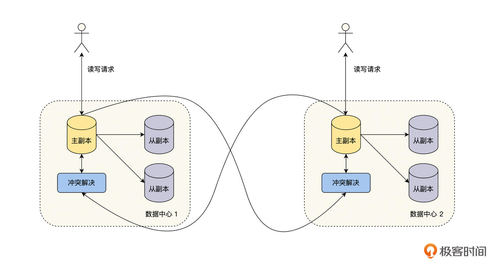

- 00 开篇词 掌握好学习路径，分布式系统原来如此简单.md.html
- 01 导读：以前因后果为脉络，串起网状知识体系.md.html
- 02 新的挑战：分布式系统是银弹吗？我看未必！.md.html
- 03 CAP 理论：分布式场景下我们真的只能三选二吗？.md.html
- 04 注册发现： AP 系统和 CP 系统哪个更合适？.md.html
- 05 负载均衡：从状态的角度重新思考负载均衡.md.html
- 06 配置中心：如何确保配置的强一致性呢？.md.html
- 07 分布式锁：所有的分布式锁都是错误的？.md.html
- 08 重试幂等：让程序 Exactly-once 很难吗？.md.html
- 09 雪崩（一）：熔断，让故障自适应地恢复.md.html
- 10 雪崩（二）：限流，抛弃超过设计容量的请求.md.html
- 11 雪崩（三）：降级，无奈的丢车保帅之举.md.html
- 12 雪崩（四）：扩容，没有用钱解决不了的问题.md.html
- 13 可观测性（一）：如何监控一个复杂的分布式系统？.md.html
- 14 可观测性（二）：如何设计一个高效的告警系统？.md.html
- 15 故障（一）：预案管理竟然能让被动故障自动恢复？.md.html
- 16 故障（二）：变更管理，解决主动故障的高效思维方式.md.html
- 17 分片（一）：如何选择最适合的水平分片方式？.md.html
- 18 分片（二）：垂直分片和混合分片的 trade-off.md.html
- 19 复制（一）：主从复制从副本的数据可以读吗？.md.html
- 20 复制（二）：多主复制的多主副本同时修改了怎么办？.md.html
- 21 复制（三）：最早的数据复制方式竟然是无主复制？.md.html
- 22 事务（一）：一致性，事务的集大成者.md.html
- 23 事务（二）：原子性，对应用层提供的完美抽象.md.html
- 24 事务（三）：隔离性，正确与性能之间权衡的艺术.md.html
- 25 事务（四）：持久性，吃一碗粉就付一碗粉的钱.md.html
- 26 一致性与共识（一）：数据一致性都有哪些级别？.md.html
- 27 一致性与共识（二）：它们是鸡生蛋还是蛋生鸡？.md.html
- 28 一致性与共识（三）：共识与事务之间道不明的关系.md.html
- 29 分布式计算技术的发展史：从单进程服务到 Service Mesh.md.html
- 30 分布式存储技术的发展史：从 ACID 到 NewSQL.md.html
- 春节加餐 技术债如房贷，是否借贷怎样取舍？.md.html
- 春节加餐 深入聊一聊计算机系统的时间.md.html
- 春节加餐 系统性思维，高效学习和工作的利器.md.html
- 结束语 在分布式技术的大潮流中自由冲浪吧！.md.html
- 捐赠
20 复制（二）：多主复制的多主副本同时修改了怎么办？
你好，我是陈现麟。
通过上节课的学习，我们掌握了主从复制中，同步复制和异步复制的原理与知识，这样我们就可以根据业务场景，为极客时间后端的缓存系统 Redis 、关系数据库 MySQL 和 PostgreSQL 选择合适的数据复制方式，确保存储系统的高可用了。
但是，随着极客时间业务的快速发展，我们对产品的可用性和用户体验会提出更高的要求，那么在异地建立多个数据中心就是一个不错的思路，它可以让系统容忍地区性的灾害，并且用户也可以就近接入数据中心来优化网络时延。
不过，如果我们在多个数据中心之间，依然通过主从复制来同步数据，那么所有的写请求都需要经过主副本所在的数据中心，容灾能力和网络时延的问题并没有彻底改善，这个问题如何解决呢？
其实通过多主复制的方式进行数据复制，就可以避免主从复制，不能发挥多数据中心优势的问题了，所以本节课，我们将通过多主复制的技术原理解决这个问题。
为什么需要多主复制
我们都知道，数据复制是指将同一份数据复制到多个机器上，来避免机器故障时数据丢失的问题，它主要是用于保障数据高可用的。可一旦我们有了多个数据副本，为了提供更好的容灾能力，数据的多个副本应该分布得足够远，分布在多个机房或者多个城市中。
接下来，我们很自然就会想到，既然数据已经分布在多个机房或者城市中了，那么是否允许用户直接读写离自己最近的数据中心的数据呢？
在主从复制的情况下，将多个从副本分别部署到不同的数据中心上，对于读请求来说，如果是对一致性要求不高，或者主从之间是同步复制的情况，用户可以就近读取离自己最近的数据中心副本的数据；但是对于写请求来说，由于必须通过主副本写入，就导致所有的写请求必须经过主副本所在的数据中心写入。
而多主复制和无主复制，允许多个副本写入，就可以避免上面的问题了，那么在本节课中，我们主要讨论多主复制，下节课再介绍无主复制。
其实除了上面讨论的，在多数据中心提供就近读写的应用场景之外，多主复制还有在线文档和在线日历之类的客户端本地修改场景。在这个场景中，每一个可以本地修改的客户端，都可以视为一个主副本，它们与远端服务器进行异步复制变更信息，只不过这个异步复制在离线的场景下，可能是几分钟、几天甚至更长。
如何实现多主复制
基于主从复制模式，我们来介绍一下多主复制模式。它是指在一个数据系统中，存在多个主从复制单元，每一个主从复制单元都可以处理读写请求，一个主从复制单元的主副本处理了写请求后，需要复制到其他的主从复制单元的主副本，具体的流程见下图。

在实现多主复制的时有几个值得注意的地方，首先，每一个主从复制单元内部是一个常规的主从复制模式，这里的主副本、从副本之间的复制可以是同步的，也可以是异步的，具体的讨论可以查看第 19 讲“主从复制”。
其次，多个主从复制单元之间，每一个主副本都会将自己的修改复制到其他的主副本，主副本之间的复制可以是同步的，也可以是异步的。
如果主副本之间的复制是同步的，那么一个主副本的写入，需要等待复制到其他的主副本成功后，才能返回给用户，这样当写入出现冲突时，可以返回失败或由用户来解决冲突。但是，它却失去了多主复制最重要的一个优点，即多个主副本都可以独立处理写入，这就导致整个模式退化为主从复制的形式。所以一般来说，多主复制的主副本之间，大多采用异步模式，我们本课中讨论的多主复制也都是异步模式。
如果主副本之间的复制是异步的，那么一个主副本待自己写入成功后，就立即返回给用户，然后再异步地将修改复制给其他的主副本。这时也会出现一个问题，如果多个主副本同时成功修改一个数据，当主副本之间复制这个数据的修改时，会出现冲突，我们就不知道以哪一个主副本的写入结果为准了。所以接下来，我们就一起讨论对于异步模式的多主复制，如何解决多个主副本写入冲突的问题。
冲突解决
写入冲突是由于多个主副本同时接受写入，并且主副本之间异步复制导致的，那么依据这个定义，我们可以推导出写入冲突的两种主要形式。
首先是由于更新导致的冲突，多个主副本同时更新了一个数据，导致这个数据的版本是非线性的，出现了分叉，具体见下图。
其次，由于新增导致的冲突，多个主副本同时新增了一个含有唯一性约束的数据，导致数据的唯一性约束被破坏。例如，在酒店预订业务中，一个时段内一个房间只能预订给一个用户，如果多个用户在多个主副本上，同时发起预订操作，就可能出现同一个时段内，一个房间被多个用户预定成功的情况。
避免冲突
基于冲突的定义，我们应该怎么解决呢？有一个很自然的思路是，既然冲突是多个主副本同时修改了一个数据，或者破坏了数据的唯一性约束导致的，那么我们就对数据进行分片，让不同的主数据负责不同的数据分片，具体分片策略可以查看“分片”系列课程。这个方式确实可以在一定程度上避免冲突，但是会出现两个问题。
首先，一个修改操作可能会修改多个分片数据，这样我们就没有办法通过分片来隔离修改了。比如，我们将修改用户余额的操作进行水平分片， ID 为 0-10 的用户在主副本 1 写入， ID 为 11-20 的用户在主副本 2 写入。当 ID 6 的用户给 ID 16 的用户转账时，如果在主副本 1 上执行，那么同一时间， ID 16 的用户在主副本 2 上也有修改时，就会出现写入冲突。
其次，由于就近接入和故障等原因，我们会将出现故障的主副本流量切换到其他的主副本，这时也会出现写入冲突的情况。我们继续按刚才的例子分析，ID 为 0-10 的用户在主副本 1 写入，ID 为 11-20 的用户在主副本 2 写入。
假设 ID 8 的用户在主副本 1 写入成功，但是数据的变更还没有同步到主副本 2 ，这时如果 ID 8 的用户到主副本 1 的网络出现问题，我们会立即将 ID 为 0-10 的用户的写入流量切换到主副本 2 ，那么在主副本 2 上，再对 ID 8 的数据进行修改就会导致冲突发生。
写时解决冲突
对于异步模式的多主复制，写入冲突是不可避免的，那么我们可以考虑，在数据写入一个主副本后，在主副本间进行复制时，检测是否有冲突，如果有冲突，就立即解决，这种方式称为写时解决冲突。它有两种实现方式，预定义解决冲突和自定义解决冲突，下面我们来一一讨论。
预定义解决冲突，是指由存储系统预先定义好规则，在冲突发生时依据预先定义好的规则，自动来解决冲突，它的规则主要有以下几种。
一是，从操作维度来处理，最后写入获胜。也就是为每一个写操作分配一个时间戳，如果发生冲突，只保留时间戳最大的版本数据，其他的修改都丢弃，但是这个方法会导致修改丢失。
二是，从副本维度来处理，最高优先级写入获胜。也就是为每一个副本都排好优先级，如果发生冲突，只保留优先级最高的副本修改数据，其他的修改都丢弃。例如，为每一个副本分配一个 ID ， ID 越大的副本，修改的优先级就越高，在发生冲突时，只保留 ID 最大的副本数据。同样，这个方法也会导致修改丢失。
三是，从数据结构和算法的维度来处理，通过研究一些可以自动解决冲突的数据结构来解决问题。比如 Google Doc 利用“操作转换”（Operational transformation）作为协作、编辑的冲突解决算法，但是目前这种方式还不太成熟，所以应用的范围比较少。
第二种实现方式是自定义解决冲突，它是由业务系统来定义冲突的解决方式，如果发生冲突了，存储系统就依据业务系统定义的方式执行。
自定义冲突解决的处理逻辑是，在主副本之间复制变更日志时，如果检测到冲突，就调用用户自定义的冲突处理程序来进行处理。由于主副本之间的数据复制是异步的，所以一般都是后台执行，不会提示用户。
一般来说，正确解决冲突是需要理解业务的，因此由业务来定义解决冲突的逻辑是非常合理的，所以大多数支持多主复制的存储系统，都会以用户自定义的逻辑，来提供解决冲突的入口。
读时解决冲突
读时解决冲突的思路和写时解决冲突的思路正好相反，即在写入数据时，如果检测到冲突，不用立即进行处理，只需要将所有冲突的写入版本都记录下来。当下一次读取数据时，会将所有的数据版本都返回给业务层，在业务层解决冲突，那么读时解决冲突的方式有下面两种。
第一种方式是由用户来解决冲突。毕竟用户才是最知道如何处理冲突的人，业务层将冲突提示给用户，让用户来解决。
另一个方式是自定义解决冲突。业务层先依据业务情况，自定义好解决冲突的处理程序，当检测到冲突时，直接调用处理程序来解决，你会发现它和写时解决冲突的第二种实现方式一样，只不过一个在写入时解决冲突，一个在读取时解决冲突。
多主复制的关键问题
多主复制虽然有多个主副本独立写入的优点，但是在一致性方面，多主复制的存储系统却面临着三个关键问题。
首先，正确解决冲突的难度非常大。从上文讨论的复杂情况中不难看出，解决冲突是一件非常难的事情，如果解决不当，就会出现修改丢失或错误的问题。
其次，异步模式的多主复制会存在数据一致性的问题。为了获得多个主副本可以独立写入的优点，多主副本之间，通常是通过异步的方式来复制数据的，这就会出现读取到陈旧版本数据的问题，影响整个系统的一致性。这里要特别说明一点，在多副本之间进行数据复制，如果你期望数据强一致性，那么目前最好的方案是 Paxos 和 Raft 之类的分布式一致性算法。
最后是多个主副本之间的复制拓扑结构问题。一般来说，多主复制的主副本之间的复制拓扑结构主要有三种：环形拓扑、星形拓扑以及全部至全部拓扑，具体见下图：
我们从图中可以看出，采用环形拓扑和星形拓扑结构时，如果一个主副本出现故障，可能会导致其他的主副本，也不能正常复制变更，甚至整个复制拓扑都会出现中断的情况。这时我们必须修复好出问题的主副本节点，或者重新调整复制的拓扑结构，才能恢复到正常状态。一般来说，这个过程需要人工参与且不能自愈，这会进一步延迟系统的恢复时间，使系统的可用性降低，同时降低系统的一致性。
在采用全部至全部拓扑结构时，虽然一个主副本的故障，不会影响其他主副本之间的数据复制，但是却会出现一个问题，那就是由于副本之间的网络时延各不相同，会使数据复制出现乱序，更新相互覆盖，变更丢失等错误情况，也会影响系统的一致性。
总而言之，虽然异步模式的多主复制有多个主副本可以独立写入的优点，但是也会在一定程度上降低系统的一致性，所以我们在使用时，需要评估业务特点，对一致性要求容忍度高的业务，可以使用多主复制，而对于一致性要求高的业务，则需要慎重考虑。
总结
这节课中，我们先讨论了多主复制的优点，即在多数据中心的场景下，每个数据中心的主副本可以单独写入，提高了系统的写入性能，并且用户可以实现就近读写，降低了系统的延迟。如果你的业务要实施多数据中心部署，也可以考虑是否采用多主复制的模式。
接着，我们讨论了如何实现多主复制，这里要注意一个关键点，如果要发挥多主复制的优点，就需要采用异步模式的多主复制，但是异步模式的多主复制还会有写入冲突的情况。
关于如何解决冲突，我们讨论了避免冲突、写时解决冲突和读时解决冲突的思路，当你在实施多主复制的时候，也可以通过这些方法，解决多主复制的写入冲突问题。
最后，因为异步模式的多主复制会在一定程度上，降低系统的一致性，所以我们在使用时，需要评估业务特点，对于一致性要求高的业务，需要慎重考虑。
思考题
本课中我们讨论了通过水平分片的方式避免写入冲突时，会出现一些不能解决的问题，那么请你思考一下，通过垂直分片的方式避免写入冲突时，会出现什么问题呢？
欢迎你在留言区发表你的看法。如果这节课对你有帮助，也推荐你分享给更多的同事、朋友。
© 2019 - 2023 Liangliang Lee. Powered by gin and hexo-theme-book.